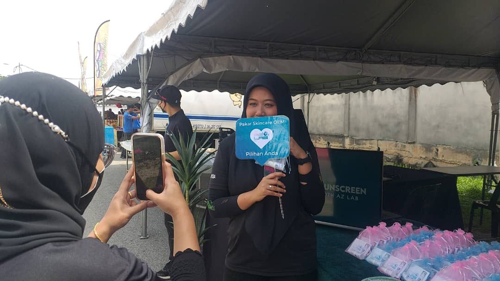

"I wanna have my own brand!" You are at the right place!
AZNEWS
Muar,Johor - October Feed
Company Humble Beginning
6 years and more to come
When it first started in 2016 from a humble background believing that the utmost dedication and integrity in delivering its promises is
the core to a success start of the business. Aestech Pro/AZ Lab Sdn Bhd believes in the core values that is being chanted everyday by
the hard workers of the company where Integrity and Honest are one of the many values being validated. We at AZ Lab research Center is determined
and comitted to deliver only the best to the clients with appropriate standard and high quality products. With these services offered, customers'
products are being handled equipped from the start until finish. The results are promised to be the best for the customers of AZ Lab.
aestech and AZ Lab logos.
More in-depth into the company profile
Located at Parit Bakar Darat, Muar
AESTECH PRO SDN BHD was established in 2016 from a humble beginning with the conviction that the highest level of dedication and honesty is required to deliver its promises to there partners in the face of any business challenges. The company began with the belief that the highest level of dedication and honesty is required to deliver its promises. They are a privately held firm that possesses a GMP accreditation, and they provide original equipment manufacturer (OEM) services in the field of skincare items while complying to all NRPA standards.
In addition to this, they are collaborating with laboratories in Switzerland, Japan, Korea, and the United States.
Az Lab factory
In addition, they have been awarded the ISO 9001 certification. They collaborated with more than a hundred distinct companies all across the Peninsula of Malaysia, and the location of their headquarters is in Muar, which is within the state of Johor. Over the course of their existence, both their methods to research and development (R&D) and their business models have been subjected to continuous improvement.
Because of the progress that has been made in technology, they are now in a position to make things that are of a higher quality and make them available to everyone.
Malacca Dragrace 2022 - Merlimau Menjerit
"Sunscreen anyone?"
A motor race under a hot sun is a call for sunscreen. Hence why Az Lab is determined to bring free sunscreen to everyone in addition to spread information of what Az Lab truly is.

"One of our booth visitors taking a pic with the booth"
Over 800+ sunscreen bottles have been successfully given out"The texture is amazing. Can I have another two?"
With the perfect ingredient and formula, we are able to extract only the best formula for the consumers where it has also become our priority since day one.
Merlimau has opened up to even a bigger and latest opportunity to the company.
CSR of 2022
SHERUN OLD FOLKS HOME & HANDICAP CENTRE
To have sympathy is a human most loving attribute; Az Lab took the opportunity on 8th of October to go and contribute the love to elderly at SHERUN centre next to Pantai Hospital, Batu Pahat. The experiences of appreciating the old folks is one of the most memorable memories to keep in heart.
Az Lab staffs are out lending ears and hands to accompany them in listening and talking to them. We had also helped them by cleaning their housing compound from out to the in. Az lab also donated a sum of contribution to help them in their future endavours. We at Az Lab Research Center wish them all good luck in the good things that they do.
"Our Boss, Mr Goh is giving an appreciation speech during one of the event sessions."
Congratulations Emily!
HAPA Award
"Our Boss, Mr Goh is giving an appreciation speech during one of the event sessions."
All love given out to our CFO, Emily Wong for winning the TOP-30 THE RESILIENCE WOMEN AWARDS.
Emily truly loves beauty and lives up to fame. Her perseverance and determination are what earned this award.
She is a role model for women and a leader who encourages all women to be strong, brave and determined.